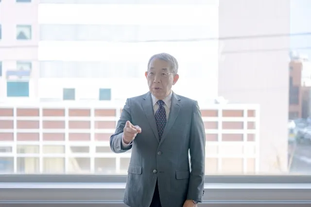

「営業部にだけは行きたくありません！」配置転換の拒否からの逆転劇

「だったら辞めます！」
人事部だった私が配置転換を打診したところ、本人に異動を拒否されたのです。人事歴30年の筆者は、異動を拒否された経験が何度もあり、対応に苦労してきました。たとえ従業員にとって好条件であったとしても、本人の納得感を得ていなければ良い人事異動とは言えません。
この記事では、異動を拒否した社員の説得に、筆者が成功したエピソードを紹介します。従業員に配置転換を伝える際の備えとして、お役立てください。
きっかけは社長の一言
従業員350人ほどの結婚式場運営を行う会社で、私が人事部長を務めていたときのことです。
経営会議の中で、中長期の目標を決める際に「さらなる営業力の強化」がテーマとなり、営業スタッフを増やす方向で一致しました。会議の中で「誰を異動させるか」が話題になり、検討を重ねるも答えは出ない。誰ひとりとして推薦しようとはしませんでした。自分の部署から人材を抜かれると他のメンバーに負担がかかることや、部署全体の成績に影響するため、どの部署の責任者も「異動させたくない」のが本音なのです。
しびれを切らした社長が一言。
「企画部のAさんがいいんじゃないか？企画力があるし、企画は営業と密接に関係している。Aさんなら営業でも十分通用する。いや、むしろ営業向きだと思うよ」
企画部に勤務するAさんは、3年前に転職で入社してきた中堅社員で、年齢は32歳。
前職でも販売企画や広告などを手がけており、当時は自社の企画力不足に悩まされていたため、スカウトで採用した人材です。企画力に優れており、顧客の購買心理をついた販売戦略を考えるのが得意で、ほとんどの企画がヒットしていました。社内でも「優秀な人材」として、上層部からの評価も高い人物でした。
まさか、企画部の要であるAさんが異動の対象になるとは誰も想像していなかったため、全員驚きを隠せませんでした。「後は、人事のほうでよろしく頼むよ」そう言われ、会議は終了。「今の状態で、企画部からAさんを外したらどうなるのか？」と思いはしたものの、社長命令なので説得せざるを得ません。
こうして、配置転換は突然決まったのです。
花形部署への異動はみんなが憧れる出世コース
営業部は社長直属の部署で、経験やスキルが重視されるため、新卒では配属されない部署です。一定の経験を積んだ者を上司が推薦する形の異動が主で、役員も営業部を経ている人が多いため、一般社員からは「エリートコース」と呼ばれています。人事広報を見た従業員同士が「◯◯さんが今度、営業部に栄転らしいね」と話題にするほど、営業部は特別な存在です。
そのため「いつかは営業部に配属されたい」と思っている社員も少なくありません。
従業員の中には「営業部に推薦されること」をモチベーションに頑張っている社員も多くいます。
なかなか営業部に配属されるチャンスはありません。Aさんが抜けることで企画部は大変になりますが、Aさんにとって今回の異動は「大きな転機」です。Aさんは「コミュニケーション力もあり、部下からの信頼もあるので問題ない」と満場一致で推薦されました。
打診した結果は「だったら辞めます！」と拒否
後日、私はAさんを会議室に呼び、配置転換を打診しました。過去にも数人に対し、営業部への配属を打診した際には「喜んでお受けします」と快諾してもらった経験があります。「選んでもらえて感謝します」とお礼を述べられたくらいです。
当然、Aさんも営業部に憧れがあるはず。誰もが憧れる花形部署への異動なので「喜んで承諾するだろう」そんな思いでAさんに配置転換の話を切り出します。
しかし、それは私の思い込みでした。
「異動になるくらいなら、辞めます！」
まさかの回答です。「え？どうして？断る理由はないでしょ？」と思いました。条件は悪くないし、Aさんの今後のキャリアを考える上で必ずプラスになると思っていた私は、愕然としたのです。
Aさんが配置転換を拒否した理由は以下の3つです。
- 営業には興味がなく、向いていない
- そもそも、企画の仕事がしたくて転職してきた
- 配置転換の可能性があるとは入社時に聞いていない
1. 営業には興味がなく、向いていない
Aさんはコミュニケーション力も高く、リーダーシップもあるため会社側は「営業に向いている」と判断しました。しかし、本人はクリエイティブな仕事が好きで、どちらかと言うと内向的な性格のため、ひとりでコツコツと仕事をするのが好きだと言うのです。
現在、2人の部下を抱えているが「マネジメントには不向きで悩んでいる」と打ち明けてくれました。
2. そもそも、企画の仕事がしたくて転職してきた
確かに、Aさんを企画職としてスカウト採用したのは間違いありません。面接の際は口にしなかったが、前職でも異動の話があり「受け入れたくなかった」ため退職を決意したとのこと。Aさんは「企画に自信を持っており、天職だと考えている。他部署では能力が発揮できない」と語っていました。
3. 配置転換の可能性があるとは入社時に聞いていない
Aさんを採用した当時、会社は企画部を強化する目的で「企画職」に特化してスカウトをかけていました。「即戦力」を採用したかったため、継続的な企画職勤務を想定しており配置転換の可能性は考えていなかったのです。
会社として、将来的に他の部署に異動させるつもりがなかったため「配置転換の可能性がある」と話さなかったのは事実です。「異動の可能性があるのなら入社は断っていた」とAさんは主張しました。
会社の方針だから従わせるのが人事の仕事だろ？

「今回は辞令ではないですよね。内示でしたらお断りします。内示だったら断れますよね？」とAさんは絶対に従いたくない様子でした。
入社の経緯や動機はどうであれ、入社すれば組織の決まりを守るのが当然で「会社の命令に従うことは企業で働いていくうえでのルール」という認識を私は持っていました。
会議に出席したメンバーに聞いても、全員が原則として「人事異動の拒否はできない」と理解していたのです。「拒否した従業員には罰則を与えることも可能」という認識まで一致していました。
困った私は弁護士に相談します。そこで得たのは以下の回答です。
- 「命令であるかどうか」がポイント
- 正式なステップとしては「打診→内示→辞令」が一般的
- 今回のケースは、内示の前段階で本人の意向を聞く目的なので拒否することは可能
- 「内示」の場合でも、異議申し立ての期間を設定されているため拒否できる
- 「辞令」は「業務命令」であるため拒否できない
「あとは、本人との話し合いで納得してもらうしかないですね」
弁護士からはそう言われました。
確かに、Aさんの言い分もわかる。企画職として採用し、将来的な配置転換の可能性は面接で話していません。就業規則にも「配置転換の可能性がある」とは記載されてはいるものの、Aさんの言い分も考慮しなければならないと感じました。
弁護士からの回答を添えて、Aさんが配置転換を拒否していることを報告した私に、社長から返ってきた言葉は、
「会社の方針だから、従わせるのが人事の仕事だろ？」
でした。私は何も返答ができませんでした。今回のAさんの配置転換は、社長から私に対する「業務命令」なのです。Aさんの主張を考慮しつつ、社長命令も実行しなければなりません。間に挟まれた私は、もう一度Aさんと話をすることにしました。今度は「打診」ではなく「説得」です。「うまく納得してくれるだろうか…」不安でいっぱいでした。
本音は「お願いだから命令に従ってくれ」
後日、あらためてAさんと面談しました。まずは「Aさんの言い分を徹底的に聞く」と決めていたので、ゆっくり話したいと思い食事に誘いました。今回の目的は「説得」ではなく、Aさんの「仕事に対する考え方」と「現状への不満」を聞き出すことです。
「今日はプライベートなので、会社の人事としてではなく個人として話を聞くから、何でも気にせず話してほしい」とAさんには伝えました。本音は「お願いだから命令に従ってくれ」と言いたいところでしたが、今回は「説得しない」と決めたのです。
いろいろと話をした結果、次のことがわかりました。
【仕事に対する考え方】
- 企画職に並々ならぬ熱い思いがある
- 出世願望はある
- 他の業務も興味があるが、将来が描けない
- 初めての仕事は不安
【現状への不満】
- 特殊な部署なので、他の部門とも交流が少なく情報が少ない
- 周りから「何をやっているのかわからない部署」と思われている
- 仕事内容を理解できる人がいないため、相談しづらい
企画の仕事はずっと続けたいが、他の業務にも興味はある。ただ、やったことがないので不安があり「企画部にいたから他の仕事はできない」と思われたくない。もっと周りが企画部に対する見方を変えてくれて、サポート体制ができればチャレンジしたい気持ちはあるということがわかりました。
当時、企画部と経理部は「会社の機密情報を扱う部署」との認識があり、別の離れた部屋に事務所がありました。外からは中の状況が見えない状況だったため「何をやっているのかわからない」と言われる原因を作っていたのです。このように、他部門の社員から「経理部と企画部は別の企業」のような見方をされていたのは、私も含め上層部は知りませんでした。コミュニケーションが不足していたのが原因です。
この状況を改善すれば、Aさんは部署異動の話を受けてくれるかもしれない
私はそう思いました。
よし、不満を取り除こう
翌日、社長に会話の内容を話し「環境を早急に改善して、もう一度Aさんと話をしたいので時間が欲しい」と申し出ると、社長は快く承諾してくれました。早速、事務所の図面を開き、何とか企画部と経理部も同じフロアで仕事ができないかを考えます。少し狭くはなるが、書庫を別の場所に移動させれば何とかレイアウトが組めそうでした。
2日後、社員総出で事務所のレイアウト変更を行いました。すると、これが功を奏したのです。全員で作業することで、企画部や経理部のメンバーと他部門のメンバーが話さざるを得なくなり、結果的にコミュニケーションが生まれました。
次第に「同じ会社なんだから、やっぱりみんな同じフロアで仕事ができたほうがいいよね」との声も上がり、今回のレイアウト変更は成功でした。社長に作業が完了したことを報告し、「近いうちにもう一度Aさんと話をします」と伝えました。帰ろうとしていた時「今からみんなで食事に行きますけど来ませんか？」と誘いを受けました。もう、完全に部門間の壁がなくなっていたのです。たとえ、Aさんが部署移動の話を受けてくれなくても、全員が一体となれたので「一定の成果はあった」と感じた瞬間でした。
予想もしなかった思わぬ展開に

事務所のレイアウトを変更したことで、Aさんもうまく他部署のメンバーとコミュニケーションが取れるようになっており、フロア全体が明るく活気に溢れています。
「来週にでもAさんともう一度話をしよう」と思いスケジュールを確認していると、Aさんが話しかけてきました。
「お話ししたいことがあるのですが、少しお時間ありますか？」
私は「良くない話だろう」と感じ、緊張した面持ちで会議室に入ります。席に付き、Aさんが話し始めました。「先日はフロアを一緒にしていただきありがとうございました。おかげで他の方とも話ができるようになり、部門間の垣根がなくなりました」とお礼を述べ「ひとつ提案させていただけませんか？」と言うのです。
Aさんの話の内容は以下のものでした。
- 今自分が作った企画は営業先で高く評価してもらっていることを聞いた
- 企画には自信があり、営業部の力になりたいと感じた
- 営業部のメンバーから「Aさんが営業に来てくれたらいいのに」と言われた
- 企画はずっと続けたい
- 営業もやってみたい気持ちになった
フロアが一緒になり営業部のとなりになったことで、営業部のメンバーと話す機会も多くなったと話すAさん。その中で、上記のことを感じたと言うのです。これを踏まえてAさんからの提案は「営業部と兼任で企画部を続けられないか」というものでした。
なんと「企画を続けながら営業をやりたい」と言うのです。
予想もしなかった提案だったので私は驚きました。確かに「企画部を続けながら営業をやる選択肢もある」と感じた私は、さっそく社長に相談し了承してもらったのです。
Aさんには、兼任は大変だが「協力体制」を作ることを約束し、営業部に異動してもらうことになりました。配属後は実力を発揮し、後に営業部と企画部の責任者として活躍するまでの人材になったのです。
配置転換は会社の思いだけではうまくいかない
今回のケースのように、配置転換は事業計画や経営方針に従って、経営者や人事が決定する「中央集権型」をとっているケースが多くあります。人事部門の力が強い大企業で取り入れられていることが多いパターンで、部門をまたいだ異動や適任者を抜擢しいやすいのがメリットです。
人事異動は該当者の希望を聞かなければならないという決まりはありません。そのため、本人の希望にかかわらず、一方的に異動先を決定することがほとんどです。
しかし、異動後に不満を抱き納得していない場合、拒否されることがあります。異動したとしても、モチベーションが上がらず離職につながることも少なくありません。
今回のAさんの件を通じて「納得してもらいやすい配置転換」を行うための、新たな試みを始めたので紹介します。
- 従業員全員と定期的に面談を行い、希望や評価を可視化する
- 一定期間のジョブローテーションを実施し、各部門を体験してもらう
- 現場の状況と意思を事前に確認する
また、実際に本人へ内示する際には、以下のことを伝えるようにしました。
- 異動後にどうなってほしいのか（将来のビジョン）
- 異動先の部署が抱える課題や期待されているミッション
- 困った時はいつでも相談できる体制がある
もし、人事異動を拒否された場合は、本人の言い分に耳を傾けながら、異動の必要性を説明しましょう。一番やってはいけないのは「会社の決定事項だから従うのが当然」「決定は覆せない」などといった説得です。これでは理解は得られません。
重要なのは、異動する社員の立場に立った配慮と、本人が抱える不安や疑問にしっかり答えることだと思います。私の体験がお役に立てば幸いです。
採用・人事やAI活用のご相談を受け付けています
AI研修、AI導入支援、採用支援、記事の執筆など、まずはお気軽にご相談ください。
ご相談はこちら